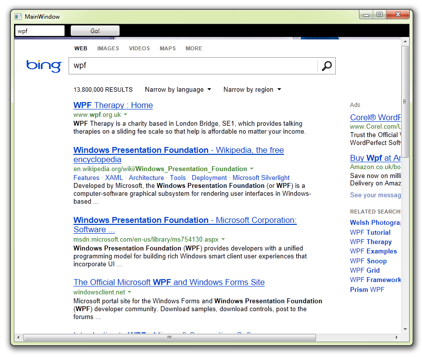

WPF Automation - Loading webpages, auto-completing & submitting web forms
Introduction
A complete example of using WPF to automatically load a webpage, fill in a web form and submit the form. This sample uses the methods and properties provided by the IHTMLDocument2 interface to analyse the web page contents. With this, you can search for elements within, edit, remove and fiddle as much as you like.

Building the Sample
Just download, unblock, unzip, open and run.
Description
This sample is based around the WebBrowser control. To interract with the contents of the page, we use IHTMLDocument2. This interface and the other objects you see in this sample come from mshtml.dll COM componant, which you must include in the references of your project.
In this case we are finding, completing and submitting the query form on the Bing search page. The code below is used to find the first form element on the webpage:
IHTMLDocument2 doc = (IHTMLDocument2)wb1.Document;
IHTMLElementCollection forms = doc.forms;
var ix = 0;
foreach (IHTMLFormElement f in forms)
if (ix++ == formNo)
return f;
return null;
IHTMLDocument2 doc = (IHTMLDocument2)wb1.Document; IHTMLElementCollection forms = doc.forms; var ix = 0; foreach (IHTMLFormElement f in forms) if (ix++ == formNo) return f; return null;
Once we have the form, we look for a form element with a specific name:
var element = form.item(name: name);
var element = form.item(name: name);
Now if the element exists, we cast it back to the class that we want, and set it's properties, in this case "value". The field we are looking for here is the HTMLInputElement
if (element != null)
{
var textarea = element as HTMLInputElement;
textarea.value = text;
successful = true;
}
if (element != null) { var textarea = element as HTMLInputElement; textarea.value = text; successful = true; }
form.submit();
form.submit();
Watch out for the forms collection, make sure you are checking in the right form from the collection.
View the source and search/count the <FORM> tags to check which form you need. Webpages often have several.
The ultimate guide to webpage manipulation.
Note also the "elementFromPoint" and "all" properties of IHTMLDocument2. "All" is a complete collection of tags from the webpage.
Ideally you can usually get to an element by name, as I show in the example, check the source of a page for the element names.
Source Code Files
- MainWindow.xaml - Starup window
- MainWindow.xaml.cs - All the code for the sample